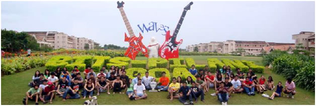

C.H.O.I.C.E CLUB

The Council for Handling and Organizing Inter-Collegiate Events (C.H.O.I.C.E.) is a prominent club of H.R. College. It is responsible for identifying potential talent in students & representing the college at all Inter collegiate events.
For the statistically minded, H.R. is the only college in Mumbai to have won all major festivals - Malhar, Kaleidoscope, Brouhaha, Kshitij & Kiran in addition to having placed in the top 3 at each and every festival over the last eight years.
C.H.O.I.C.E. sailed into the academic year 2009-2010 with Professor-in-charge Mr. Amit Nandu, President Karan Pandya and Vice-Presidents Danesh Irani & Anushka Shetty at the helm. Assisting them was a diverse crew of directors and volunteers, enthused at the prospect of winning accolades for the college.
The first event on C.H.O.I.C.E.'s platter was to be H.R. Fest - an intra-collegiate festival.
However, due to the dual problems of the delayed F.Y.J.C. admissions as well as the subsequent swine flu pandemic, H.R. Fest was cancelled despite all the preparations having been made.
In August, after two months of tiring days and sleepless nights, the C.H.O.I.C.E. contingent, led by Karan Pandya, stormed into Malhar at St. Xavier's College. By winning numerous flagship events, H.R. finished 3rd overall.
In August, after two months of tiring days and sleepless nights, the C.H.O.I.C.E. contingent, led by Karan Pandya, stormed into Malhar at St. Xavier's College. By winning numerous flagship events, H.R.finished 3rd overall. The first fortnight of September brought with it a new Vice-President, Dhruv Khopkar.
To commemorate H.R. College's Golden Jubilee, a grand event was held at the Trident on the 19th September, 2009. Here, C.H.O.I.C.E. organized and performed a prayer dance dedicated to Lord Ganesha and a mega-parade to launch the new H.R. Song.
In the very same month, C.H.O.I.C.E. participated in K.C. College's fest Kiran, with Sumit Shah as Contingent Leader. Everyone gave it their best shot, ensuring H.R. a 2nd place.
Making an entry into C.H.O.I.C.E.'s calendar this year, was an outstation festival - Waves. The 70 member contingent, led by Nihal Daswani traveled all way to BITS Pilani's Goa Campus in November, where they stayed for five days. Despite being away from 'homeground' the contingent managed to win the hearts of hosts and judges alike, sweeping the Dance, Music & Literary Arts events in addition to the coveted Overall Trophy. By doing so, H.R. College, won its First Outstation Trophy, defeating talent from all over the nation.
On returning from Goa, C.H.O.I.C.E. had barely a week before the next major festival - Kaleidoscope, held at the sprawling campus of Sophia College. With Danesh Irani as Contingent Leader, and a grand victory behind them, C.H.O.I.C.E. entered Kaleidoscope with all guns blazing. After a week of non-stop, back-to back events, H.R. was awarded the runner-up trophy.
December proved to be twice as nice with C.H.O.I.C.E. winning both Kshitij and Brouhaha, which took place at Mithibai College and Sydenham College respectively.
Under the able leadership of Dhruv Khopkar, H.R. won Kshitij for the second year in a row by over 2000 points, even though the performers and organizers had their terminal examinations in the week preceding the festival. In addition to winning the Overall trophy, H.R. also swept the Literary Arts and Performing Arts trophies.
For the eighth consecutive year, the Brouhaha trophy came home to H.R., this time with Jehan Madan as Contingent Leader. Once again, the Literary Arts, Performing Arts, Fine Arts, Sports & Gaming events were swept by C.H.O.I.C.E., a fine end to the calendar year!
In January 2010, the Diamond Jubilee of the Hyderabad Sind National Collegiate Board was celebrated at the NCPA, where C.H.O.I.C.E. members performed a classical dance dedicated to Lord Ganesha.
The following month, H.R. College embarked on an ambitious project- Project Chirag, an attempt to provide solar powered lamps to all the houses of a village on the outskirts of Mumbai. The cost of the project was estimated at Rs.3,650/- per house which was to be attained by way of sponsorship. C.H.O.I.C.E. members enthusiastically helped in locating sponsors and raising funds worth a whopping Rs.2,00,000/- for approximately half the houses in the village.
On the whole, glancing at 2009 - 2010 through a Kaleidoscope, C.H.O.I.C.E. has ensured a perennial Malhar at H.R., bringing a Kiran of knowledge and experience in every member's life. While making a Brouhaha in the college and yet reaching the highest Kshitij in the inter-college arena, it cannot be denied that C.H.O.I.C.E. is making Waves everywhere.
INTER-COLLEGIATE TROPHIES WON BY C.H.O.I.C.E. (H.R. COLLEGE)
Waves - BITS Pilani, Goa
H.R.'s first Outstation Trophy, 1st place overall, sweeping the Performing Arts & the Literary Arts departments
Kshitij - Mithibai College
Overall trophy along with Performing Arts & Literary Arts trophies for the second year in a row.
Brouhaha - Sydenham College
Overall trophy along with Performing Arts, Literary Arts, Fine Arts, Gaming & Sports departments for the 8th year in a row
Kaleidoscope - Sophia College: 2nd place
Kiran - K.C. College : 2nd place
Malhar - St. Xavier's College : 3rd place
The C.H.O.I.C.E. Board
Professor-in-charge : Mr. Amit Nandu
President : Karan Pandya
Vice Presidents : Danesh Irani, Anushka Shetty, Dhruv Khopkar
Directors : Sumil Shah, Rohan Sanjana, Sumit Shah, Saba Bagdadi, Prabtej Gadh, Priyanka Sawhney, Isha Amin, Nihal Daswani, Jehan Madan, Aastha Samtani.